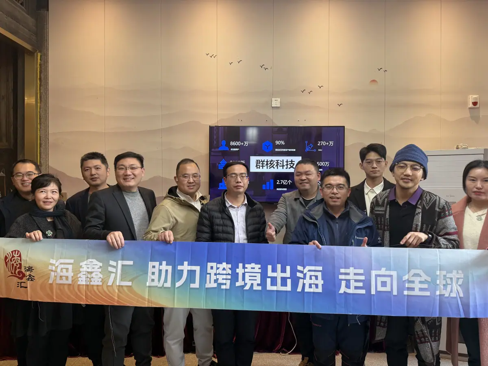

SALON-16
出海沙龙 · OUTBOUND SALON
福州·跨境电商出海联动 企业如何借力平台打通海外市场
Fuzhou Salon: leveraging platforms to open overseas markets via cross-border e-commerce.
出海沙龙 共赴山海，洞见世界。2025，出海破局是大势所趋——不出海，便出局。

共赴山海，洞见世界。
2025，出海破局是大势所趋。在这时代浪潮下，每一个心怀壮志的人都深知：不出海，便出局。这不仅是一句警示，更是我们内心的呐喊。福州的和君友人，此刻，诚邀您携手，共启出海新程。
1 · 和君专属场｜生态筑基
- ▶ 3月17日 13:00-16:00 破局者茶叙
- ▶ 和君福州会客厅，报名后提供具体到达方式
届时将汇聚：
- √ 和君商学：福建省负责人，雷金文；
- √ 标杆技术透视：群核科技，张乐。"杭州六小龙"中首家启动港股IPO的AI驱动型空间智能企业，助力企业在虚拟环境训练、智能设计及全球化布局中实现突破；
- √ 跨境出海先锋：海比电商，神秘大咖。国内首家亚马逊全认证服务商，累计孵化2000+个国际品牌，深度服务200+中大型企业；
- √ 实战资源沉淀：和君，董立鑫。和君商学五届校友，十八届出海班主任，曾任德国企业高管，多年跨国公司业务实战分享与海外资源；
活动核心价值：
- ① 拆解数字赋能下的品牌出海路径
- ② 体验虚拟现实技术重塑的"中国智造"
- ③ 构建福州跨境出海生态圈校友资源网络
既是思想盛宴，更是行动起点。期待与各位在闽江畔共绘出海蓝图，见证中国品牌远征星辰大海。
GTN 判断视角
福州及福建产业带出海，优势在制造与贸易底蕴，短板在平台运营与品牌化。借力亚马逊等平台只是第一步，真正的护城河是把"平台流量+供应链+本地化运营"沉淀为自有渠道能力——海鑫汇正是帮助企业完成这一步跃迁的伙伴。
本文内容整理自海鑫汇出海沙龙福州专场记录。 查看公众号原文 →
想把"出海"从口号变成可执行的路径？先做一次免费首诊判断。
预约免费首诊 →